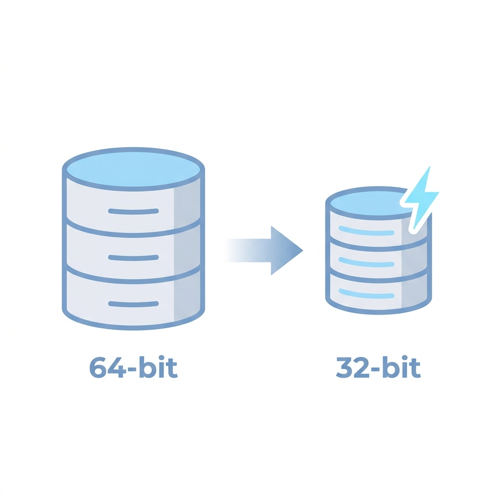
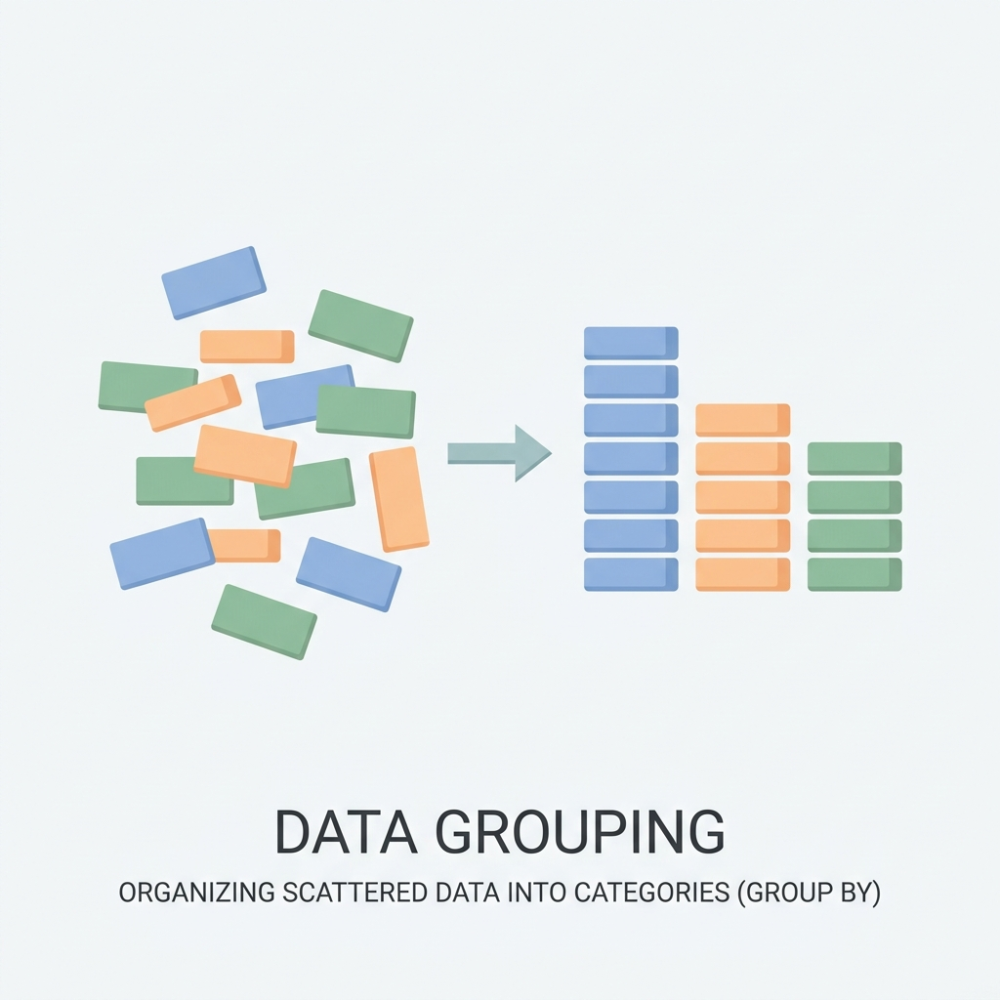

"Pandas로 데이터를 가공하기 전, 가장 중요한 첫걸음은 데이터의 원자성(Atomicity)을 확보하는 것입니다. 원자성이란 각 셀(Cell)에 쪼갤 수 없는 단일 값만 들어있어야 한다는 원칙(Tidy Data)을 의미합니다!"
아래 예시처럼 한 셀에 여러 값이 섞여 있다면 Pandas의 강력한 기능들을 제대로 쓸 수 없습니다. 본 실습의 예제들은 모두 원자성을 갖추도록 미리 전처리가 완료된 상태입니다.
# ❌ 원자성이 깨진 나쁜 예 (한 셀에 값이 2개 이상) bad_data = { '라인': ['A라인', 'B라인'], '불량원인': ['온도이상, 압력초과', '진동'] # 쉼표로 묶인 데이터! } # ✅ 원자성이 확보된 좋은 예 (단일 값) good_data = { '라인': ['A라인', 'A라인', 'B라인'], '불량원인': ['온도이상', '압력초과', '진동'] # 행을 분리하여 각각 저장! }
"Pandas의 진정한 강력함은 엑셀의 피벗테이블처럼 데이터를 쉽게 묶어서 통계를 내는 groupby 기능에 있습니다!"
df.groupby('기준컬럼'): 특정 컬럼의 데이터를 기준으로 그룹을 묶어줍니다..count() / .mean() / .sum(): 그룹화된 데이터의 개수, 평균, 합계 등 통계량을 바로 계산합니다.import pandas as pd # 가상의 공정 불량 데이터 생성 data = { '라인': ['A라인', 'B라인', 'A라인', 'C라인', 'B라인', 'A라인'], '불량원인': ['온도이상', '압력초과', '온도이상', '진동', '진동', '온도이상'] } df = pd.DataFrame(data) # 라인별 불량 발생 건수 집계 defect_counts = df.groupby('라인')['불량원인'].count() print(defect_counts) # 결과: # 라인 # A라인 3 # B라인 2 # C라인 1
프로젝트를 하다보면 수백만 건의 센서 데이터를 다루게 될 텐데, Pandas는 기본적으로 실수를 float64(64비트)로 저장합니다. 너무 무겁습니다!
정밀한 소수점 아래 15자리까지 필요한 게 아니라면, float32로 낮춰주기만 해도 메모리 사용량을 절반으로 줄일 수 있습니다!
# 기존 메모리 상태 (float64) print(df['온도센서'].dtype) # 출력: float64 # 메모리 다이어트! float32로 변환 df['온도센서'] = df['온도센서'].astype('float32')
특히 CNN(합성곱 신경망) 같은 딥러닝 모델에 이미지를 넣을 때, 입력 데이터를 미리 float32로 맞춰주면 GPU 메모리 초과(OOM)를 방지하고 연산 속도를 대폭 끌어올릴 수 있습니다!
import tensorflow as tf from tensorflow.keras import layers, models # 1. 원본 데이터 (예: float64 이미지 배열) # images = np.random.rand(10000, 28, 28, 1) # 매우 무거움 # 2. 모델 입력 전 float32로 강제 변환! (메모리 절반 감소) images_float32 = images.astype('float32')
포스코퓨처엠 각 부서의 데이터 분석 환경에서 Pandas의 그룹화와 원자성 확보, 자료형 최적화는 현장 문제 해결의 핵심적인 역할을 합니다. 다음과 같이 다양한 부서에서 활용되고 있습니다.
groupby('사업장')['위험요소'].count()로 묶어 핵심 안전 지표 대시보드를 구축합니다.
float64에서 float32로 다운캐스팅하여 한정된 메모리(OOM 예방)로 거대한 실험 데이터를 빠르게 처리합니다.

fillna(), 중복제거 등)하여 평가 신뢰도를 높입니다.
groupby('프로젝트')['수익'].sum() 한 줄로 깔끔하게 묶어 대시보드에 시각화합니다.

pd.merge)하여 AI 파이프라인의 기반을 다집니다.
astype을 통해 최적의 데이터프레임 구조를 만들어냅니다.
groupby(['고객사', '월별'])['매출'].sum()으로 가공하여, 수요 예측과 마케팅 전략 수립에 활용합니다.